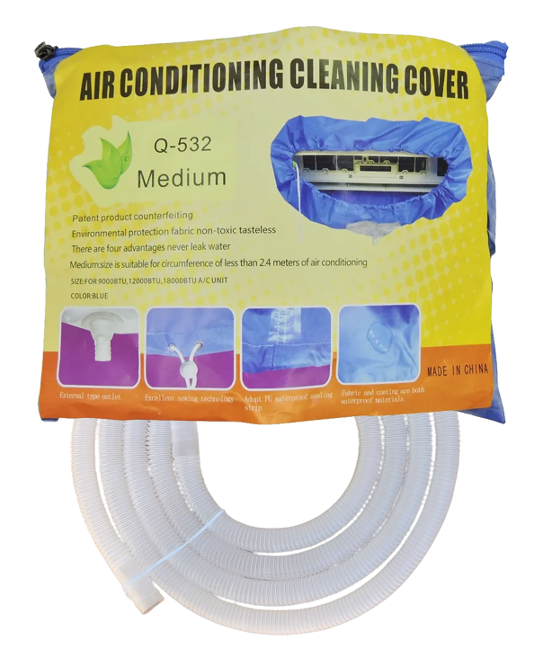
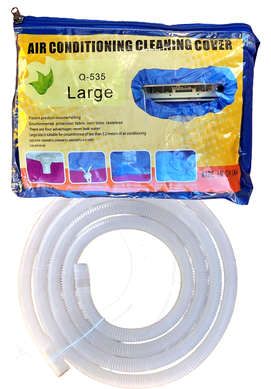
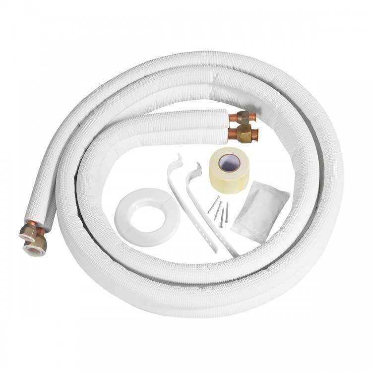

☎ 0216 344 48 19
Klima markasına ait 84 ürün Klimasun kataloğunda. Diğer Yedek Parça, Borular & Bağlantı Elemanları, Drenaj Pompaları, Otomasyon & Kontrol alanlarında orijinal ürün ve yedek parça tedariki, stoktan hızlı sevkiyat.
Tüm 84 ürünü filtreli listede gör →







Tüm 84 ürünü filtreli listede gör →
Evet. Klimasun Klima ürünlerini ve yedek parçalarını orijinal olarak tedarik eder; kataloğumuzda 84 Klima ürünü listelidir.
Evet, tüm ürünler orijinaldir. Stokta olmayanlar Almanya ve İtalya'dan sipariş üzerine temin edilir.
Ürünü teklif sepetine ekleyip WhatsApp (0532 424 6219) veya e-posta ile iletin; hızlıca kurumsal teklif alırsınız.